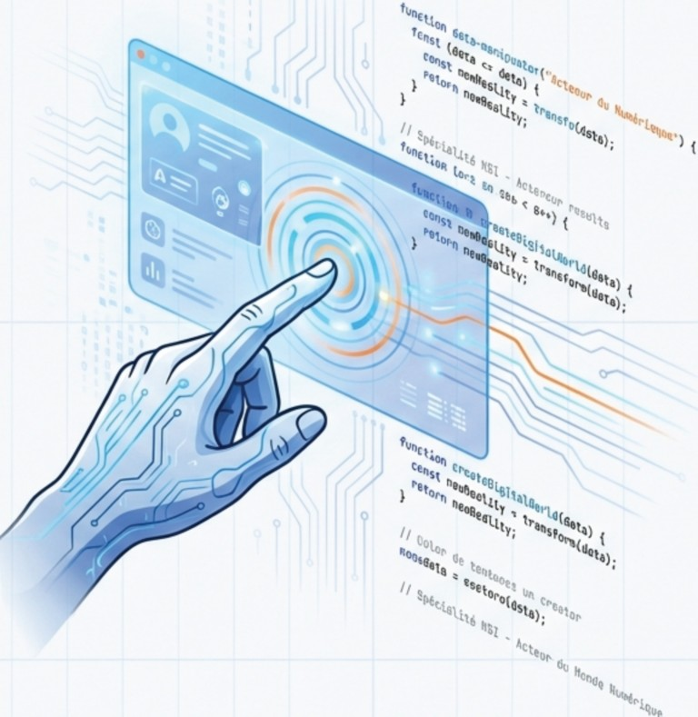
, • •
Deviens Acteur du Monde Numérique
Numérique et Sciences Informatiques
Passez de l'aut re côté de l'écra n.
Plus que du code : une science et une technique.
Program mation
!) Langages -- - Architecture
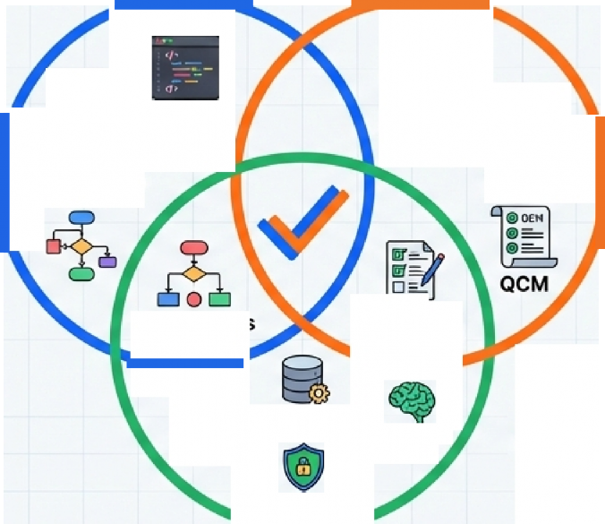
ÇJ
Students
Projects Projets Concrets
-
. -
Algorithmes
Q
Cloud
Analysis
Data
Epreuves
pratiques
Blockchain Al
Enjeux Mod ernes
Cybersecurity
Un parcours lycée axé sur la compréhension théorique et technique de l'informatique.
/!SI NotebookLM
Au cœur du programme :
6 piliers fondamentaux.
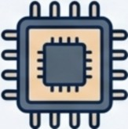 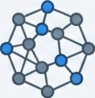 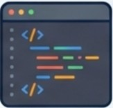
Architecture
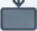 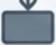
Algorithmes

Réseaux
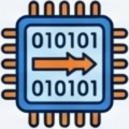
Codage de
l n
Langages
Interaction
'informatio
Homme-Machine
Comprendre la machine.
Architecture Codage de l'information
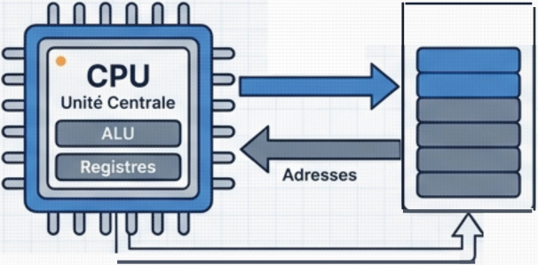
Mémoire
Données / Instructions
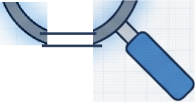
Architecture de Von Neumann
Processeurs et mémoire
Langage machine
Binaire et Hexadécimal
Représentation du texte et de l'image
Formats de données
Parler la langue de l'ordinateur.
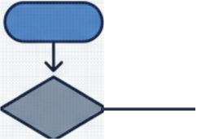
• | ||
• | ||
•
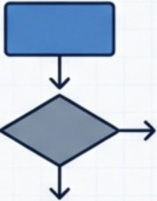
1 1
''
• 1
Io.- - '
--- JJY
# Exemple de tri
def bubble_sort(arr):
n = ten(arr)
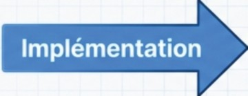
for i in range(n):
for j in range(8, n-i-1):
if arr[j]> arr[j+l]:
arr[j], arr[j+l]= arr[j+l], arr[j]
return arr
9
10 # Données de test
11 data = [64, 3, 25, 12, 22, 11, 90]
sorted_data = bubble_sort(data)
print (f"Trié: {sorted_data}")
Algorithmes : La logique pure. Tri, recherche, et complexité.
Langages : La mise en œuvre. Syntaxe, variables et fonctions.
Le monde connecté.
,_ Protocoles (TCP/IP) , Routage,
Architecture physique.
0
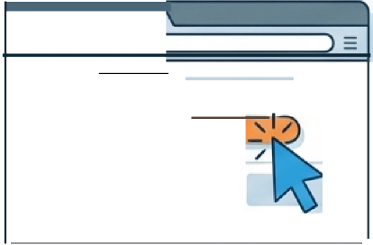
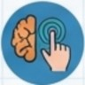
X
Interaction Homme-Machine
(
Le Web, Interfaces utilisateurs (UI), Gestion des événements.
Python
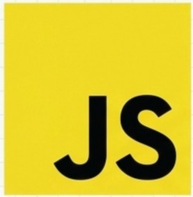
HTML CSS
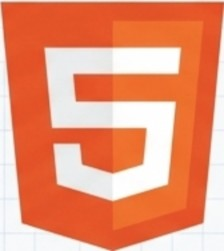 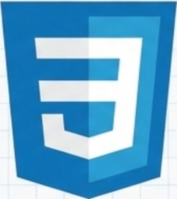
L'environnement standard de l'industrie .
Domaines d1expertise technique.


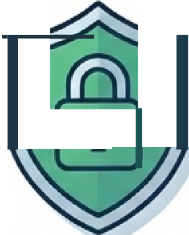
'
Analyse du Cloud
Data Science
Cybersécurité Intelligence Blockchain
Artificielle


Une pédagogie différente :Le Labo NSI
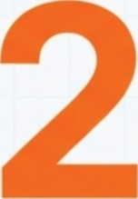
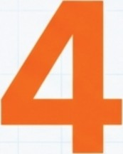
Apprendre par la pratique.
Travail en mode projet.
élèves maximum par groupe
Collaboration type "Startup".
La pédagogie par projet.
'
1 I [/>
<span>...</span>
) f unct on () {{ )
• • •
u }]
Idéation Développement Produit Final
Les élèves ne font pas qu'écouter. Ils créent des jeux, des sites web et des applications concrètes.
Une évaluation complète pour le Bac
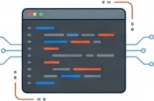
••
•• ---
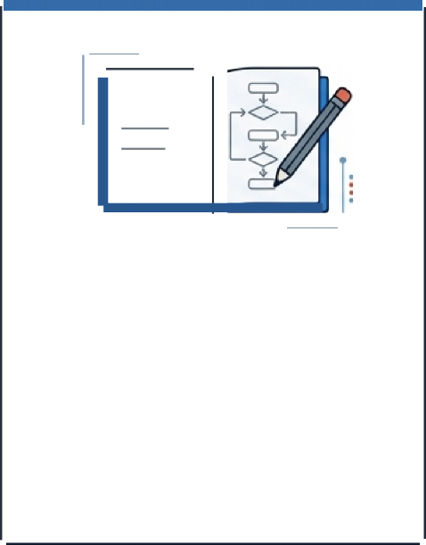
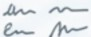
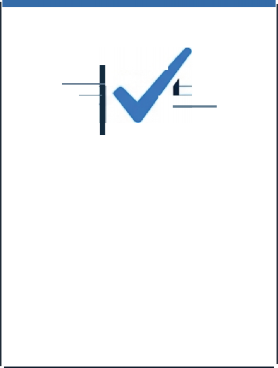
1/"'
,
Epreuves Pratiques
{Terminale)
Codage en temps limité. Résolution de problèmes sur machine.
,
Ecrit
{Théorie & Algo)
Sujet national de 3h30. Théorie de l'information et algorithmique.
"--...
QCM
{Connaissances)
Questions à choix multiples. Culture générale et notions clés.
,
Un tremplin vers l1excellence (Grandes Ecoles)
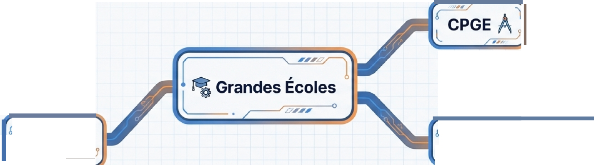
MPSI, MPll (Mat hs, Physique, Ingénierie, lnfo)
,, ,
,,. ,
"''
BAC NSI lÉco} d'lngénieu
Post-Bac (INSA, EPITA, EPITECH)
Universités et filières courtes.
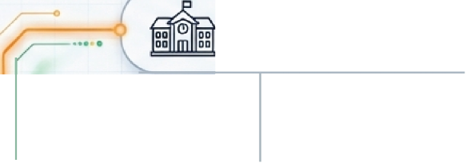
Universitaire
_)
"•·
.. .
.
: 1 - BUT Informatiq ue/Réseaux
•
...
B_A C_N_SI
-- ''\
. \
.;io
1• 1•
--0-
'---"---- Licences Mathémat iques ou Informatique
Courte / Technique
11 "-•---'-----•
'-----=--- BTS CIEL (Cybersécurité, Électronique)
1
-- BTS SIO (Services Informatiques)
,,-_ - ..
\ Stratégique
Compétences demandées partout.
"' . "'- '--- ··- -
.o
Scientifique k\
\
La rigueur des sciences formelles.
• /
-:(\
f1 ,:-
0 ·· ,, -
<i
Créatif ( 00
Passer d'utilisateur à
créateur.
Polyvalent
Ouverture vers
l'ingénierie et le data.
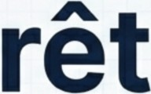
'
>_ Contactez votre Professeur Principal aujourd'hui .I
Source :infographie source material provided.